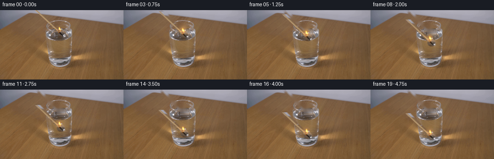
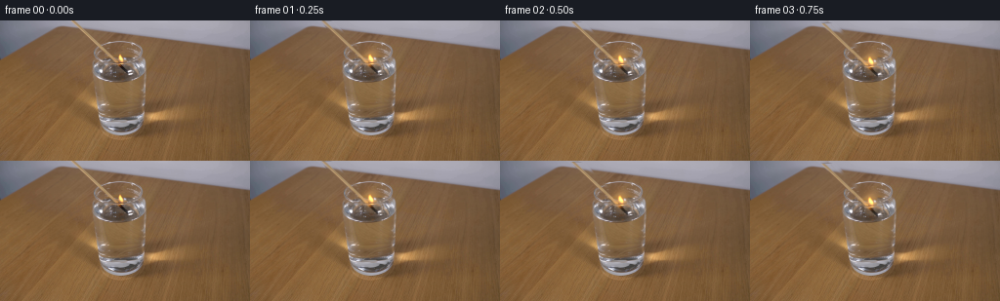
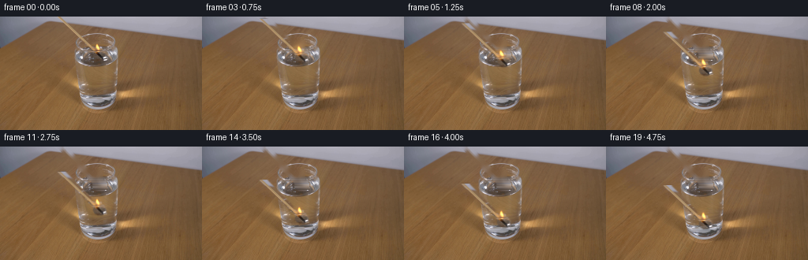
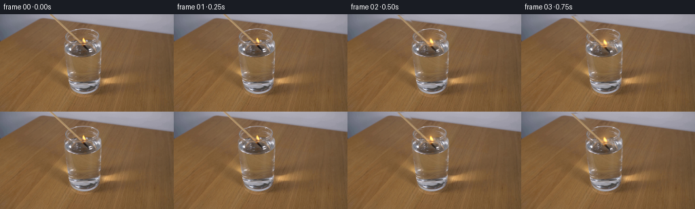

CODING AGENTS AS PIXEL WORLD MODELS
traex/DeepSeek-V4.1-Flash · 0111
点击播放 · 原生 RGB 像素
逐轮保存的候选
回放视频、检查图与代码变化。
每份候选均可单独播放。实际图片检查记录在下方工具轨迹中。
候选 01播放与检查图
点击播放 · 原生 RGB 像素


展开代码变化
--- 上一保存版本
+++ 本次保存版本
@@ -0,0 +1,241 @@
+"""Generate a locked-off RGB clip of a lit match being lowered into water."""
+
+from pathlib import Path
+
+import cv2
+import numpy as np
+from PIL import Image
+
+import artifact_io
+
+
+WIDTH = 256
+HEIGHT = 144
+FRAME_COUNT = 20
+FPS = 4
+
+
+def smoothstep(value):
+ value = np.clip(value, 0.0, 1.0)
+ return value * value * (3.0 - 2.0 * value)
+
+
+def make_masks():
+ yy, xx = np.mgrid[:HEIGHT, :WIDTH]
+
+ # The match lies on x - y = 77.5 and runs in from the top-left.
+ center_x = yy + 77.5
+ across = np.abs(xx - center_x)
+ along = (xx - 71.0) * 0.727 + yy * 0.687
+ stick = (across < 4.7) & (along > -8.0) & (yy < 54.0)
+
+ head_d = ((xx - 126.0) / 8.2) ** 2 + ((yy - 48.5) / 7.4) ** 2
+ head = head_d < 1.0
+
+ flame_d = ((xx - 123.0) / 6.4) ** 2 + ((yy - 38.8) / 8.6) ** 2
+ flame = flame_d < 1.0
+
+ body = stick | head
+ object_mask = body | flame
+ return body.astype(np.uint8), flame.astype(np.uint8), object_mask.astype(np.uint8)
+
+
+def soft_alpha(mask, feather=1.1):
+ mask_u8 = mask.astype(np.uint8) * 255
+ blurred = cv2.GaussianBlur(mask_u8.astype(np.float32) / 255.0, (0, 0), feather)
+ return np.clip(blurred, 0.0, 1.0)
+
+
+def reconstruct_plate(frame, object_mask):
+ repair_mask = cv2.dilate(object_mask * 255, np.ones((3, 3), np.uint8), iterations=1)
+ frame_u8 = np.clip(frame, 0.0, 255.0).round().astype(np.uint8)
+ bgr = cv2.cvtColor(frame_u8, cv2.COLOR_RGB2BGR)
+ repaired = cv2.inpaint(bgr, repair_mask, 3.5, cv2.INPAINT_TELEA)
+ clean = cv2.cvtColor(repaired, cv2.COLOR_BGR2RGB).astype(np.float32)
+
+ # Horizontal interpolation follows the tabletop grain and avoids the
+ # smeared look of inpainting across the narrow diagonal stick.
+ interpolated = clean.copy()
+ for y in range(HEIGHT):
+ xs = np.flatnonzero(repair_mask[y])
+ if xs.size == 0:
+ continue
+ start, end = int(xs[0]), int(xs[-1]) + 1
+ left = max(0, start - 3)
+ right = min(WIDTH - 1, end + 2)
+ left_color = frame[y, left].astype(np.float32)
+ right_color = frame[y, right].astype(np.float32)
+ span = max(1, right - left)
+ for x in range(start, end):
+ weight = (x - left) / span
+ interpolated[y, x] = left_color * (1.0 - weight) + right_color * weight
+
+ # The glass rim needs the local inpaint; broad wood areas read more
+ # naturally with the grain-following interpolation.
+ upper = np.clip((54.0 - np.arange(HEIGHT)) / 18.0, 0.0, 1.0)[:, None, None]
+ clean = clean * upper + interpolated * (1.0 - upper)
+ return np.clip(clean, 0.0, 255.0)
+
+
+def paste_sprite(destination, frame, alpha, transform):
+ sprite = frame.astype(np.float32)
+ warped = cv2.warpAffine(
+ sprite,
+ transform,
+ (WIDTH, HEIGHT),
+ flags=cv2.INTER_LINEAR,
+ borderMode=cv2.BORDER_CONSTANT,
+ borderValue=0,
+ )
+ warped_alpha = cv2.warpAffine(
+ alpha.astype(np.float32),
+ transform,
+ (WIDTH, HEIGHT),
+ flags=cv2.INTER_LINEAR,
+ borderMode=cv2.BORDER_CONSTANT,
+ borderValue=0,
+ )[..., None]
+ return destination * (1.0 - warped_alpha) + warped * warped_alpha
+
+
+def add_flame_glow(frame, flame_alpha, center, strength):
+ if strength <= 0:
+ return frame
+ glow = cv2.GaussianBlur(flame_alpha.astype(np.float32), (0, 0), 3.2)
+ yy, xx = np.mgrid[:HEIGHT, :WIDTH]
+ radial = np.exp(
+ -(
+ ((xx - center[0]) / 11.0) ** 2
+ + ((yy - center[1]) / 13.0) ** 2
+ )
+ )
+ warm = np.array([255.0, 176.0, 62.0], dtype=np.float32)
+ amount = (0.65 * glow + 0.35 * radial) * strength
+ return frame + warm[None, None, :] * amount[..., None]
+
+
+def add_water_interaction(frame, phase):
+ if phase <= 0.0:
+ return frame
+
+ yy, xx = np.mgrid[:HEIGHT, :WIDTH]
+ cx, cy = 128.0, 102.5
+ u = float(np.clip(phase, 0.0, 1.0))
+
+ ring_alpha = np.zeros((HEIGHT, WIDTH), dtype=np.float32)
+ ring_dark = np.zeros_like(ring_alpha)
+ for index, delay in enumerate((0.0, 0.22, 0.42)):
+ age = u - delay
+ if age <= 0.0:
+ continue
+ radius = 3.0 + 12.0 * age
+ rx = radius
+ ry = 0.75 + 2.6 * age
+ distance = np.sqrt(((xx - cx) / rx) ** 2 + ((yy - cy) / ry) ** 2)
+ ring = np.exp(-((distance - 1.0) / 0.17) ** 2) * (0.34 - 0.13 * index)
+ ring_alpha = np.maximum(ring_alpha, ring * (1.0 - age * 0.45))
+ ring_dark = np.maximum(ring_dark, ring * 0.22)
+
+ glass_region = (
+ (xx > 102.0)
+ & (xx < 149.0)
+ & (yy > 94.0)
+ & (yy < 112.0)
+ & (((xx - 125.5) / 23.0) ** 2 + ((yy - 103.0) / 8.0) ** 2 < 1.0)
+ )
+ ring_alpha *= glass_region
+ ring_dark *= glass_region
+ highlight = np.array([203.0, 207.0, 219.0], dtype=np.float32)
+ frame = frame + highlight[None, None, :] * ring_alpha[..., None] * 0.55
+ frame = frame - np.array([34.0, 26.0, 18.0])[None, None, :] * ring_dark[..., None]
+
+ # A restrained waterline glint and displaced reflection around the impact.
+ surface = np.exp(-((yy - cy) / 0.9) ** 2) * np.exp(-((xx - cx) / 18.0) ** 2)
+ shimmer = 0.10 + 0.05 * np.sin(2.0 * np.pi * (u * 2.2 + xx / 14.0))
+ frame = frame + highlight[None, None, :] * (surface * shimmer * glass_region)[..., None]
+ return frame
+
+
+def tint_submerged_tip(frame, dy, time):
+ yy, xx = np.mgrid[:HEIGHT, :WIDTH]
+ tip_y = 54.0 + dy
+ if tip_y < 99.0:
+ return frame
+ submerged = np.clip((yy - 100.0) / 4.0, 0.0, 1.0)
+ near_tip = np.exp(-((xx - 126.0) / 9.0) ** 2) * np.exp(-((yy - tip_y) / 5.0) ** 2)
+ water_color = np.array([92.0, 103.0, 110.0], dtype=np.float32)
+ amount = np.clip(submerged * near_tip * 0.38, 0.0, 0.38)
+ return frame * (1.0 - amount[..., None]) + water_color[None, None, :] * amount[..., None]
+
+
+def render():
+ source_path = Path(__file__).with_name("first_frame.png")
+ source = np.asarray(Image.open(source_path).convert("RGB"), dtype=np.uint8)
+ if source.shape != (HEIGHT, WIDTH, 3):
+ raise ValueError(f"unexpected first frame shape: {source.shape}")
+
+ body_mask, flame_mask, object_mask = make_masks()
+ clean = reconstruct_plate(source.astype(np.float32), object_mask)
+
+ body_alpha = soft_alpha(body_mask, 0.75)
+ residual = np.linalg.norm(source.astype(np.float32) - clean, axis=2)
+ flame_alpha = soft_alpha(flame_mask, 0.8)
+ flame_alpha *= np.clip((residual - 2.0) / 15.0, 0.0, 1.0)
+ flame_alpha = np.maximum(flame_alpha, flame_mask * 0.80)
+ flame_alpha = np.clip(flame_alpha, 0.0, 1.0)
+
+ source_f = source.astype(np.float32)
+ frames = []
+ for index in range(FRAME_COUNT):
+ time = index / (FRAME_COUNT - 1)
+ descent = 49.0 * smoothstep((time - 0.02) / 0.94)
+ sway = np.sin(2.0 * np.pi * (0.78 * time) + 0.35)
+ pulse = 1.0 + 0.035 * np.sin(2.0 * np.pi * (1.25 * time) + 0.6)
+
+ if index == 0:
+ frame = source_f.copy()
+ else:
+ frame = clean.copy()
+ match_transform = np.array(
+ [[1.0, 0.0, 0.0], [0.0, 1.0, descent]], dtype=np.float32
+ )
+ frame = paste_sprite(frame, source_f, body_alpha, match_transform)
+
+ base = np.array([123.0, 44.0], dtype=np.float32)
+ flame_transform = cv2.getRotationMatrix2D(
+ tuple(base), 5.2 * sway, pulse
+ ).astype(np.float32)
+ flame_transform[0, 2] += 0.35 * sway
+ flame_transform[1, 2] += descent
+ frame = paste_sprite(frame, source_f, flame_alpha, flame_transform)
+
+ glow_center = (
+ 123.0 + 0.4 * sway,
+ 39.0 + descent - 0.6 * sway,
+ )
+ glow_strength = 0.16 + 0.035 * (sway + 1.0)
+ flame_glow_alpha = cv2.warpAffine(
+ flame_alpha,
+ flame_transform,
+ (WIDTH, HEIGHT),
+ flags=cv2.INTER_LINEAR,
+ borderMode=cv2.BORDER_CONSTANT,
+ borderValue=0,
+ )
+ frame = add_flame_glow(
+ frame, flame_glow_alpha, glow_center, glow_strength
+ )
+
+ contact = (54.0 + descent - 100.0) / 5.0
+ frame = add_water_interaction(frame, contact)
+ frame = tint_submerged_tip(frame, descent, time)
+ frames.append(np.clip(frame, 0.0, 255.0).round().astype(np.uint8))
+
+ frames = np.stack(frames)
+ frames[0] = source
+ return frames
+
+
+if __name__ == "__main__":
+ case_dir = Path(__file__).resolve().parent
+ artifact_io.save(render(), case_dir)
候选 02播放与检查图
点击播放 · 原生 RGB 像素


展开代码变化
--- 上一保存版本
+++ 本次保存版本
@@ -177,14 +177,17 @@
body_mask, flame_mask, object_mask = make_masks()
clean = reconstruct_plate(source.astype(np.float32), object_mask)
+ source_f = source.astype(np.float32)
body_alpha = soft_alpha(body_mask, 0.75)
residual = np.linalg.norm(source.astype(np.float32) - clean, axis=2)
flame_alpha = soft_alpha(flame_mask, 0.8)
- flame_alpha *= np.clip((residual - 2.0) / 15.0, 0.0, 1.0)
- flame_alpha = np.maximum(flame_alpha, flame_mask * 0.80)
+ warm = np.clip(
+ (source_f[:, :, 0] - source_f[:, :, 2] - 10.0) / 85.0, 0.0, 1.0
+ )
+ flame_alpha *= np.clip((residual - 3.0) / 14.0, 0.0, 1.0)
+ flame_alpha *= np.clip(0.35 + 0.65 * warm, 0.0, 1.0)
flame_alpha = np.clip(flame_alpha, 0.0, 1.0)
- source_f = source.astype(np.float32)
frames = []
for index in range(FRAME_COUNT):
time = index / (FRAME_COUNT - 1)
@@ -193,6 +196,8 @@
pulse = 1.0 + 0.035 * np.sin(2.0 * np.pi * (1.25 * time) + 0.6)
if index == 0:
+ frame = source_f.copy()
+ elif index == 1:
frame = source_f.copy()
else:
frame = clean.copy()
可观测工具轨迹
实际执行的命令与返回图片。
命令 1exit 0
/bin/bash -c "pwd && rg --files -g 'prompt.txt' -g 'GENERATION_RULES.md' -g 'first_frame.png' -g '*' | sed -n '1,200p'"
命令 2exit 0
/bin/bash -c "sed -n '1,240p' prompt.txt"
命令 3exit 0
/bin/bash -c "sed -n '1,280p' GENERATION_RULES.md"
命令 4exit 0
/bin/bash -c "find . -maxdepth 2 -type f -printf '%p %s bytes\\n' | sort | sed -n '1,240p'"
命令 5exit 0
/bin/bash -c "sed -n '1,260p' artifact_io.py"
命令 6exit 0
/bin/bash -c "sed -n '1,260p' player_template.html"
命令 7exit 0
/bin/bash -c "python - <<'PY'
from PIL import Image
import numpy as np
im=Image.open('first_frame.png').convert('RGB')
a=np.asarray(im)
print(im.size, a.dtype, a.shape)
print('min/max/mean',a.reshape(-1,3).min(0),a.reshape(-1,3).max(0),a.reshape(-1,3).mean(0))
# quantized top colors
q=(a//16)*16
cols,counts=np.unique(q.reshape(-1,3),axis=0,return_counts=True)
for i in np.argsort(counts)[-30:][::-1]: print(counts[i], cols[i])
PY"命令 8exit 0
/bin/bash -c "python - <<'PY'
from PIL import Image
import numpy as np
im=np.array(Image.open('first_frame.png').convert('RGB')).astype(float)
g=im.mean(2)
# average 4x4 blocks, print ascii
h,w=g.shape
for y in range(0,h,4):
row=''
for x in range(0,w,4):
v=g[y:y+4,x:x+4].mean()
chars=' .,:;irsXA253hMHGS#9B&@'
row+=chars[min(len(chars)-1,int(v/256*len(chars)))]
print(row)
PY"命令 9exit 0
/bin/bash -c "python - <<'PY'
from PIL import Image
import numpy as np
im=np.array(Image.open('first_frame.png').convert('RGB'))
# 16x9 blocks: means and stds
for by in range(9):
vals=[]
for bx in range(16):
p=im[by*16:(by+1)*16,bx*16:(bx+1)*16]
vals.append('%02x%02x%02x'%tuple(p.mean((0,1)).astype(int)))
print(by, ' '.join(vals))
PY"命令 10exit 0
/bin/bash -c "python - <<'PY'
from PIL import Image
import numpy as np
from collections import deque
im=np.array(Image.open('first_frame.png').convert('RGB')).astype(int)
# components bright pixels
for th in [180,200,220,240,250]:
m=(im.max(2)>th)&(im.min(2)>th*0.7)
ys,xs=np.where(m)
print('th',th,'n',len(xs),'bbox', (xs.min(),ys.min(),xs.max(),ys.max()) if len(xs) else None)
# row/col top counts
if len(xs):
print(' x peaks', sorted(enumerate(np.bincount(xs,minlength=256)), key=lambda p:p[1], reverse=True)[:8])
print(' y peaks', sorted(enumerate(np.bincount(ys,minlength=144)), key=lambda p:p[1], reverse=True)[:8])
# color stats for brightness bins
for lo,hi in [(0,50),(50,100),(100,150),(150,200),(200,230),(230,256)]:
m=(im.mean(2)>=lo)&(im.mean(2)<hi)
print('lum',lo,hi,'n',m.sum(),'mean',im[m].mean(0) if m.any() else None)
# print likely flame pixels colors >200 and low blue? and coords sample
m=(im[:,:,0]>200)&(im[:,:,1]>140)&(im[:,:,2]<180)
ys,xs=np.where(m)
print('warm bright n',len(xs),'bbox',(xs.min(),ys.min(),xs.max(),ys.max()) if len(xs) else None)
for y,x in list(zip(ys,xs))[::max(1,len(xs)//30)]: print(x,y,im[y,x])
PY"命令 11exit 0
/bin/bash -c "python - <<'PY'
from PIL import Image
im=Image.open('first_frame.png')
print(im.info)
PY"命令 12exit 0
/bin/bash -c "python - <<'PY'
from PIL import Image
import numpy as np
im=np.array(Image.open('first_frame.png').convert('RGB'))
# print RGB and luminance grids every 4 px for central upper scene, char labels based on hue
h,w,_=im.shape
for y in range(20,121,2):
row=''
for x in range(60,201,2):
r,g,b=im[y:y+2,x:x+2].mean((0,1))
lum=(r+g+b)/3
if r>200 and g>140: c='F'
elif b>r*1.15 and b>100: c='W'
elif r>g*1.12 and g>b*1.12: c='w'
elif abs(r-g)<12 and abs(g-b)<15 and lum>90: c='G'
elif r>g*1.2: c='b'
else: c='.'
row+=c
print(f'{y:3d} '+row)
PY"命令 13exit 0
/bin/bash -c "python - <<'PY'
from PIL import Image
import numpy as np
im=np.array(Image.open('first_frame.png').convert('RGB')).astype(float)
# print luminance ascii 2x2 in central crop x90:175 y25:125
chars=' .:-=+*#%@'
for y in range(24,126,2):
row=''
for x in range(88,176,2):
p=im[y:y+2,x:x+2]
r,g,b=p.mean((0,1))
lum=.299*r+.587*g+.114*b
row+=chars[min(9,int(lum/256*10))]
print(f'{y:3d} '+row)
PY"命令 14exit 0
/bin/bash -c "python - <<'PY'
from PIL import Image
import numpy as np
im=np.array(Image.open('first_frame.png').convert('RGB')).astype(int)
chars=' .:-=+*#%@'
# actual color classes, 1px region downsample 2x1
for y in range(30,120,2):
row=''
for x in range(112,164,2):
p=im[y:y+2,x:x+2].mean((0,1)); r,g,b=p
lum=.299*r+.587*g+.114*b
# flame warm
if r>180 and g>110 and r>b*1.4: c='F'
elif r>145 and g>105 and r>b*1.25: c='f'
elif b>r*1.10 and b>115: c='W'
elif r>g*1.12 and g>b*1.12: c=chars[min(9,int(lum/256*10))]
elif abs(r-g)<15 and abs(g-b)<18: c='g'
else: c='.'
row+=c
print(f'{y:3d} '+row)
PY"命令 15exit 0
/bin/bash -c "python - <<'PY'
from PIL import Image
import numpy as np
im=np.array(Image.open('first_frame.png').convert('RGB')).astype(float)
# color-coded 1x1 blocks central at full res? output x=110..166 y=30..122 every 2 using nearest hue category
for y in range(30,124,2):
row=''
for x in range(108,168,2):
r,g,b=im[y,x]
if r>220 and g>180: c='Y'
elif r>190 and g>120 and b<130: c='F'
elif r>165 and g>115 and b<105: c='f'
elif b>r*1.05 and b>115: c='w'
elif abs(r-g)<12 and abs(g-b)<15 and r>80: c='G'
elif abs(r-g)<18 and abs(g-b)<20 and r>120: c='H'
elif r>g*1.10 and g>b*1.10: c='.'
elif r>g*1.25: c='b'
else: c=' '
row+=c
print(f'{y:3d} '+row)
PY"命令 16exit 0
/bin/bash -c "python - <<'PY'
import cv2, numpy as np
im=cv2.imread('first_frame.png')
g=cv2.cvtColor(im,cv2.COLOR_BGR2GRAY)
for lo,hi in [(20,50),(40,100),(80,160)]:
e=cv2.Canny(g,lo,hi)
n,lab,stats,cent=cv2.connectedComponentsWithStats(e)
comps=sorted(stats[1:],key=lambda s:s[4],reverse=True)[:20]
print('\\nCanny',lo,hi,'edge pixels',e.sum()//255)
for x,y,w,h,area in comps: print((x,y,w,h,area), 'cent',tuple(np.round(cent[np.where((stats==[x,y,w,h,area]).all(1))[0][0]],1)))
lines=cv2.HoughLinesP(cv2.Canny(g,30,80),1,np.pi/180,threshold=15,minLineLength=8,maxLineGap=2)
print('\\nlines')
if lines is not None:
for l in sorted(lines[:,0].tolist(), key=lambda q: -(q[2]-q[0])**2-(q[3]-q[1])**2)[:50]: print(l)
PY"命令 17exit 1
/bin/bash -c "python - <<'PY'
from PIL import Image
import numpy as np
im=np.array(Image.open('first_frame.png').convert('RGB')).astype(float)
g=im.mean(2)
# per row/col mean, min max, edge energy
for axis,name in [(1,'rows'),(0,'cols')]:
v=g.mean(axis)
print(name)
for i in range(0,len(v),4): print(f'{i:3d} {v[i:i+4].mean():6.1f}', end=' ')
print('\\n')
# gradient summary by row and col
import cv2
gr=np.sqrt(cv2.Sobel(g,cv2.CV_32F,1,0,ksize=3)**2+cv2.Sobel(g,cv2.CV_32F,0,1,ksize=3)**2)
for axis,name in [(1,'row edges'),(0,'col edges')]:
v=gr.mean(axis)
print(name)
for i in range(0,len(v),4): print(f'{i:3d} {v[i:i+4].mean():6.1f}', end=' ')
print('\\n')
PY"命令 18exit 0
/bin/bash -c "python - <<'PY'
from PIL import Image
import numpy as np
im=np.array(Image.open('first_frame.png').convert('RGB')).astype(np.float32)
g=im.mean(2)
# rows split colors to infer room/table boundary
for y in range(0,144,4):
p=im[y:y+4]
print(f'y{y:3d}', 'mean',p.mean((0,1)).round().astype(int), 'x00',p[:,:16].mean((0,1)).round().astype(int), 'x64',p[:,64:96].mean((0,1)).round().astype(int), 'x128',p[:,128:160].mean((0,1)).round().astype(int), 'x224',p[:,224:].mean((0,1)).round().astype(int))
print('cols by y bands')
for x in range(0,256,8):
print(f'x{x:3d}', im[:28,x:x+8].mean((0,1)).round().astype(int), im[28:96,x:x+8].mean((0,1)).round().astype(int), im[96:,x:x+8].mean((0,1)).round().astype(int))
PY"命令 19exit 0
/bin/bash -c "python - <<'PY'
import cv2, numpy as np
from PIL import Image
im=np.array(Image.open('first_frame.png').convert('RGB'))
pix=im.reshape(-1,3).astype(np.float32)
criteria=(cv2.TERM_CRITERIA_EPS+cv2.TERM_CRITERIA_MAX_ITER,60,0.2)
_,lab,cent=cv2.kmeans(pix,24,None,criteria,5,cv2.KMEANS_PP_CENTERS)
cent=cent.astype(int)
order=np.argsort(cent.mean(1))
mapid=np.empty(24,int); chars='0123456789ABCDEFGHIJKLMN'
for j,i in enumerate(order): mapid[i]=j
print('id rgb count')
for j,i in enumerate(order): print(chars[j], tuple(cent[i]), (lab.ravel()==i).sum())
a=mapid[lab.ravel()].reshape(144,256)
print('\\ncentral map x=80..180 y=20..125 (1px horiz, 1px vert)')
for y in range(20,126):
print(f'{y:3d} '+''.join(chars[v] for v in a[y,80:181]))
PY"命令 20exit 0
/bin/bash -c "python - <<'PY'
import numpy as np
from PIL import Image
im=np.array(Image.open('first_frame.png').convert('RGB')).astype(float)
# sample vertical/horiz RGB values near glass lines
for x in [88,90,92,94,96,98,100,102,104,106,108,110,112,114,116,118,120,122,124,126,128,130,132,134,136,138,140,142,144,146,148,150,152,154,156,158,160,162,164,166,168,170,172,174,176,178,180]:
print('x',x, 'y45',im[45,x].astype(int),'y70',im[70,x].astype(int),'y100',im[100,x].astype(int),'y110',im[110,x].astype(int))
print('vert lines around x')
for y in [35,40,45,50,55,60,65,70,75,80,85,90,95,100,105,110,115,120]:
print('y',y, ' '.join(f'{x}:{tuple(im[y,x].astype(int))}' for x in [100,104,108,112,116,120,124,128,132,136,140,144,148,152,156,160,164]))
PY"命令 21exit 0
/bin/bash -c "python - <<'PY'
from PIL import Image
import numpy as np
im=np.array(Image.open('first_frame.png').convert('RGB'))
# create enlarged crop nearest and save; also false-color edge/alpha-like views
crop=Image.fromarray(im[25:130,85:180]).resize((760,840),Image.Resampling.NEAREST)
crop.save('.tmp/central_crop.png')
# high-contrast luminance crop
g=im.mean(2)
lo,hi=np.percentile(g[25:130,85:180],[3,97])
g=np.clip((g-lo)/(hi-lo)*255,0,255).astype('uint8')
Image.fromarray(g[25:130,85:180]).resize((760,840),Image.Resampling.NEAREST).save('.tmp/central_lum.png')
# color residual by blur subtract
import cv2
b=cv2.GaussianBlur(im.astype(np.float32),(0,0),4)
res=im.astype(np.float32)-b
res=np.clip(128+res*3,0,255).astype('uint8')
Image.fromarray(res[25:130,85:180]).resize((760,840),Image.Resampling.NEAREST).save('.tmp/central_res.png')
print('saved')
PY"命令 22exit 127
/bin/bash -c 'ls -la .tmp && file first_frame.png .tmp/*.png'
命令 23exit 0
/bin/bash -c "python - <<'PY'
import cv2,numpy as np
from PIL import Image
im=np.array(Image.open('first_frame.png').convert('RGB'))
# inspect shapes with canny by printing 2px cells x 90..175 y30..125
g=cv2.cvtColor(im,cv2.COLOR_RGB2GRAY)
e=cv2.Canny(g,35,90)
for y in range(28,126,2):
row=''
for x in range(88,176,2):
n=e[y:y+2,x:x+2].sum()//255
row += ' ' if n==0 else ('.' if n<=1 else ('+' if n<=2 else '#'))
print(f'{y:3d} '+row)
PY"命令 24exit 0
/bin/bash -c "python - <<'PY'
from PIL import Image
import numpy as np
im=np.array(Image.open('first_frame.png').convert('RGB'))
# save selected numbered crops as large images in tmp
for name,box in [('match',(108,22,150,70)),('flame',(116,30,138,62)),('glass',(88,80,174,126)),('scene',(0,0,256,144))]:
c=im[box[1]:box[3],box[0]:box[2]]
Image.fromarray(c).resize((c.shape[1]*10,c.shape[0]*10),Image.Resampling.NEAREST).save(f'.tmp/{name}.png')
print(name,box,c.shape)
PY"命令 25exit 0
/bin/bash -c "python - <<'PY'
import cv2,numpy as np
from PIL import Image
im=np.array(Image.open('first_frame.png').convert('RGB')).astype(np.float32)
# inspect y 80-125 x 80-180 color means per row with segment boundaries
for y in range(80,126):
vals=[]
for x0,x1 in [(80,90),(90,100),(100,110),(110,120),(120,130),(130,140),(140,150),(150,160),(160,170),(170,180)]:
vals.append('%02x%02x%02x'%tuple(im[y,x0:x1].mean(0).astype(int)))
print(y,' '.join(vals))
PY"命令 26exit 0
/bin/bash -c "python - <<'PY'
from PIL import Image
import numpy as np
im=np.array(Image.open('first_frame.png').convert('RGB')).astype(float)
# line samples: from p0=(77,0) to p1=(131,51), normal perpendicular; print avg RGB and max brightness per offset at points
p0=np.array([77.,0.]); p1=np.array([131.,51.]); v=p1-p0; L=np.linalg.norm(v); u=v/L; n=np.array([-u[1],u[0]])
print('u',u,'n',n,'L',L)
for t in np.linspace(0,1,30):
p=p0+v*t
vals=[]
for d in range(-6,7):
q=np.rint(p+n*d).astype(int); x,y=q
if 0<=x<256 and 0<=y<144:
c=im[y,x]; vals.append((d,int(c.mean()),tuple(c.astype(int))))
print(f't{t:.2f} p({p[0]:.1f},{p[1]:.1f})', 'peak',max(vals,key=lambda z:z[1]), 'center', vals[6])
PY"命令 27exit 0
/bin/bash -c "python - <<'PY'
import cv2,numpy as np
from PIL import Image
im=np.array(Image.open('first_frame.png').convert('RGB')).astype(np.float32)
mx=im.max(2); mn=im.min(2); sat=(mx-mn)/(mx+1e-6)
for condname,m in [
('neutral>70',(sat<.10)&(mx>70)),
('neutral>100',(sat<.10)&(mx>100)),
('cool>100',(im[:,:,2]>im[:,:,0]*1.05)&(mx>100)),
('brightneutral',(sat<.12)&(mx>120)),
('darkneutral',(sat<.12)&(mx<100)),
('verybright',(mx>190)&(sat<.25)),
]:
m=m.astype(np.uint8)
n,lab,stats,cent=cv2.connectedComponentsWithStats(m,8)
comps=sorted([tuple(map(int,s)) for s in stats[1:] if s[4]>8],key=lambda s:-s[4])[:20]
print('\\n',condname,'total',int(m.sum()),'comps',comps)
# mask ascii 2x2 x 80..180
print('map')
for y in range(20,128,2):
row=''
for x in range(80,180,2):
k=m[y:y+2,x:x+2].sum()
row += '#' if k>=3 else ('+' if k>=1 else ' ')
print(row)
PY"命令 28exit 0
/bin/bash -c "python - <<'PY'
import cv2,numpy as np
from PIL import Image
im=np.array(Image.open('first_frame.png').convert('RGB')).astype(np.float32)
g=cv2.cvtColor(im.astype('uint8'),cv2.COLOR_RGB2GRAY).astype(float)
# print gradient vector and rgb every 3 rows for key x positions around match top
for y in range(24,66,2):
print('y',y)
for x in range(108,150,2):
print(f'{x}:{im[y,x].astype(int)}',end=' ')
print()
PY"命令 29exit 0
/bin/bash -c "python - <<'PY'
from PIL import Image
import numpy as np
im=np.array(Image.open('first_frame.png').convert('RGB'))
for name,box in [('upper',(60,0,200,100)),('glass',(90,80,180,144))]:
c=im[box[1]:box[3],box[0]:box[2]]
Image.fromarray(c).resize((c.shape[1]*5,c.shape[0]*5),Image.Resampling.LANCZOS).save(f'.tmp/{name}_smooth.png')
PY"命令 30exit 0
/bin/bash -c "python - <<'PY'
import cv2,numpy as np
from PIL import Image
im=np.array(Image.open('first_frame.png').convert('RGB')).astype(np.float32)
# For each y, list x where strong saturation-neutral transition / edges; to identify container
mx=im.max(2); mn=im.min(2); sat=(mx-mn)/(mx+1e-6)
for y in range(82,126,2):
# runs of neutral-ish high lum
m=((sat<.18)&(mx>85))[y]
runs=[]; st=None
for x,v in enumerate(m):
if v and st is None: st=x
if st is not None and (not v or x==255):
en=x if not v else x+1
if en-st>=2: runs.append((st,en))
st=None
print(y,runs)
PY"命令 31exit 0
/bin/bash -c "python - <<'PY'
import cv2,numpy as np
from PIL import Image
im=np.array(Image.open('first_frame.png').convert('RGB')).astype(np.float32)
# locate circular/elliptical rim via neutral intensity around expected center (130,101)
# print local neutral intensity map 1px, chars
for y in range(82,126):
row=''
for x in range(90,175):
r,g,b=im[y,x]; mx=max(r,g,b); mn=min(r,g,b); s=(mx-mn)/(mx+1)
lum=.299*r+.587*g+.114*b
if mx>210 and s<.12: c='@'
elif mx>160 and s<.15: c='#'
elif mx>120 and s<.18: c='+'
elif mx>95 and s<.22: c='.'
elif mx>140 and s<.35: c='o'
else: c=' '
row+=c
print(f'{y:3d} '+row)
PY"命令 32exit 0
/bin/bash -c "python - <<'PY'
import numpy as np
from PIL import Image
im=np.array(Image.open('first_frame.png').convert('RGB')).astype(float)
# Estimate neutral highlight contours with ellipse fitting from bright neutral points in glass region
import cv2
mx=im.max(2); mn=im.min(2); sat=(mx-mn)/(mx+1)
for t in [.10,.15,.2,.25,.3]:
m=((sat<t)&(mx>110)).astype(np.uint8); m[:80]=0; m[120:]=0; m[:,:95]=0; m[:,165:]=0
cnts,_=cv2.findContours(m,cv2.RETR_EXTERNAL,cv2.CHAIN_APPROX_NONE)
print('t',t,[(cv2.contourArea(c),len(c),cv2.boundingRect(c)) for c in sorted(cnts,key=cv2.contourArea,reverse=True)[:10]])
PY"命令 33exit 0
/bin/bash -c "python - <<'PY'
import numpy as np
from PIL import Image
im=np.array(Image.open('first_frame.png').convert('RGB')).astype(float)
# print neutral brightness (saturation penalty) as ascii, in crop x95..160 y80..122, 1px
for y in range(78,123):
row=''
for x in range(95,161):
r,g,b=im[y,x]; mx=max(r,g,b); mn=min(r,g,b); sat=(mx-mn)/(mx+1)
v=(mx-mn)
# contour by saturation only and by color distance from local table approx
lum=.299*r+.587*g+.114*b
if mx>200 and sat<.2: c='@'
elif mx>160 and sat<.25: c='#'
elif mx>125 and sat<.3: c='+'
elif mx>100 and sat<.35: c='.'
elif mx>110: c='o'
else: c=' '
row+=c
print(f'{y:3d} '+row)
PY"命令 34exit 0
/bin/bash -c "python - <<'PY'
import numpy as np
from PIL import Image
im=np.array(Image.open('first_frame.png').convert('RGB')).astype(float)
# Estimate straight tube edges by scan for low-sat bright pixels across y30-62, find local high
for y in range(28,64,2):
scores=[]
for x in range(100,151):
r,g,b=im[y,x]; mx=max(r,g,b); mn=min(r,g,b); sat=(mx-mn)/(mx+1); lum=.299*r+.587*g+.114*b
s=0.6*lum+100*(.3-sat)
scores.append(s)
# peaks spaced 3
top=[]
for i in range(1,len(scores)-1):
if scores[i]>=scores[i-1] and scores[i]>=scores[i+1] and scores[i]>120: top.append((scores[i],i+100))
top=sorted(top,reverse=True)
picked=[]
for s,x in top:
if all(abs(x-q)>2 for _,q in picked): picked.append((s,x))
if len(picked)>=8: break
print(y,[(x,round(s)) for s,x in sorted(picked,key=lambda z:z[1])])
PY"命令 35exit 0
/bin/bash -c "python - <<'PY'
import numpy as np
from PIL import Image
im=np.array(Image.open('first_frame.png').convert('RGB')).astype(float)
# Try identify match outer edges by comparing chroma and vertical coherence. Print strong edge coords sorted
import cv2
g=cv2.cvtColor(im.astype('uint8'),cv2.COLOR_RGB2GRAY)
e=cv2.Canny(g,20,60)
for y in range(20,65):
xs=np.where(e[y,100:155]>0)[0]+100
if len(xs): print(y,xs.tolist())
PY"命令 36exit 0
/bin/bash -c "python - <<'PY'
import numpy as np
from PIL import Image
im=np.array(Image.open('first_frame.png').convert('RGB')).astype(float)
# exact samples at suspected match edges, print deviation from local median table for x 100-152 y 24-64
for y in range(24,64,2):
vals=[]
for x in range(102,152):
r,g,b=im[y,x]
# saturation / neutral indicator
mx=max(r,g,b); mn=min(r,g,b); sat=(mx-mn)/(mx+1)
if mx>145 and sat<.25: c='H'
elif mx>115 and sat<.25: c='h'
elif r>g*1.30 and g>b*1.10: c='B'
elif r>g*1.18 and g>b*1.15: c='b'
elif r>g*1.10 and g>b*1.10: c='.'
elif r>g*1.05: c=','
else: c=' '
vals.append(c)
print(f'{y:3d} '+''.join(vals))
PY"命令 37exit 0
/bin/bash -c "python - <<'PY'
import numpy as np
from PIL import Image
im=np.array(Image.open('first_frame.png').convert('RGB')).astype(float)
# collect bright-ish near-neutral x positions at each y in upper zone
for y in range(20,64,2):
out=[]
for x in range(90,170):
r,g,b=im[y,x]; mx=max(r,g,b); mn=min(r,g,b); sat=(mx-mn)/(mx+1)
if mx>135 and sat<.22: out.append(x)
print(y,out)
PY"命令 38exit 0
/bin/bash -c "python - <<'PY'
import numpy as np
from PIL import Image
im=np.array(Image.open('first_frame.png').convert('RGB')).astype(float)
# locate likely match body via connected strong chroma region; print candidate run boundaries where r-g > 18 and g-b > 18
for y in range(20,70,2):
m=((im[y,:,0]-im[y,:,1]>15)&(im[y,:,1]-im[y,:,2]>15)&(im[y,:,0]>120))
runs=[];st=None
for x,v in enumerate(m):
if v and st is None:st=x
if st is not None and (not v or x==255):
en=x if not v else x+1
if en-st>=2:runs.append((st,en))
st=None
print(y,runs)
PY"命令 39exit 0
/bin/bash -c "python - <<'PY'
import numpy as np
from PIL import Image
im=np.array(Image.open('first_frame.png').convert('RGB')).astype(np.float32)
# Print actual horizontal row around y=44-47 RGB so can detect object boundaries via color discontinuities
for y in [42,43,44,45,46,47,48]:
print('\\ny',y)
for x in range(90,165):
print(f'{x}:{tuple(im[y,x].astype(int))}',end=' ')
print()
PY"命令 40exit 0
/bin/bash -c "python - <<'PY'
import numpy as np
from PIL import Image
im=np.array(Image.open('first_frame.png').convert('RGB')).astype(float)
# per-row colorfulness high region locate match likely via saturation in central x 100-160
for y in range(20,80,2):
arr=im[y]
sat=(arr.max(1)-arr.min(1))/(arr.max(1)+1)
mx=arr.max(1)
# only dark/chroma high? print top saturation in window
ids=np.argsort(sat[100:160])[-6:]+100
print(y,[(int(x),round(float(sat[x]),2),int(mx[x])) for x in sorted(ids)])
PY"命令 41exit 0
/bin/bash -c "python - <<'PY'
import numpy as np
from PIL import Image
im=np.array(Image.open('first_frame.png').convert('RGB')).astype(float)
# print vertical columns to see flame shape based on very bright/dark
for x in range(112,145):
ys=[]
for y in range(20,70):
r,g,b=im[y,x]
if r>190 and g>130: ys.append(y)
print(x,ys)
PY"命令 42exit 0
/bin/bash -c "python - <<'PY'
import numpy as np
from PIL import Image
im=np.array(Image.open('first_frame.png').convert('RGB')).astype(float)
# top region bright clusters connected comp at thresholds
import cv2
mx=im.max(2); mn=im.min(2); sat=(mx-mn)/(mx+1)
for name,m in [('flame',(mx>185)&(sat>.3)),('white',(mx>200)&(sat<.2)),('bright',(mx>180))]:
m=(m.astype(np.uint8)*255)
n,lab,stats,cent=cv2.connectedComponentsWithStats(m,8)
print('\\n',name)
for x,y,w,h,area in sorted(stats[1:].tolist(),key=lambda s:-s[4])[:20]: print((x,y,w,h,area))
PY"命令 43exit 0
/bin/bash -c "python - <<'PY'
import numpy as np
from PIL import Image
im=np.array(Image.open('first_frame.png').convert('RGB')).astype(float)
# horizontal and vertical gradient coherence in upper central crop
import cv2
g=cv2.cvtColor(im.astype('uint8'),cv2.COLOR_RGB2GRAY).astype(np.float32)
gx=cv2.Sobel(g,cv2.CV_32F,1,0,ksize=3); gy=cv2.Sobel(g,cv2.CV_32F,0,1,ksize=3)
mag=np.sqrt(gx*gx+gy*gy)
# print vectors for edges at x>132 y44-62 maybe match boundaries
for y in range(30,64,2):
inds=np.argsort(mag[y,90:170])[-8:]+90
print(y,[(int(x),int(mag[y,x]),round(float(gx[y,x])),round(float(gy[y,x]))) for x in sorted(inds)])
PY"命令 44exit 0
/bin/bash -c "python - <<'PY'
import numpy as np
from PIL import Image
im=np.array(Image.open('first_frame.png').convert('RGB')).astype(float)
# infer straight line Hough at low threshold on grayscale upper region, print long lines
import cv2
g=cv2.cvtColor(im.astype('uint8'),cv2.COLOR_RGB2GRAY)
e=cv2.Canny(g,10,35)
e[:18]=0; e[70:]=0; e[:,:85]=0; e[:,175:]=0
lines=cv2.HoughLinesP(e,1,np.pi/360,threshold=8,minLineLength=8,maxLineGap=4)
ls=[]
if lines is not None:
for x1,y1,x2,y2 in lines[:,0]:
L=((x2-x1)**2+(y2-y1)**2)**.5
ang=np.degrees(np.arctan2(y2-y1,x2-x1))
ls.append((L,x1,y1,x2,y2,ang))
for l in sorted(ls,reverse=True)[:100]: print(tuple(round(x,1) for x in l))
PY"命令 45exit 0
/bin/bash -c "python - <<'PY'
import numpy as np
from PIL import Image
im=np.array(Image.open('first_frame.png').convert('RGB')).astype(float)
# Build row-wise linear background using strips x95-105 and x150-160, interpolate across; residual
bg=np.zeros_like(im)
for y in range(im.shape[0]):
l=im[y,90:100].mean(0); r=im[y,155:165].mean(0)
for x in range(im.shape[1]):
t=np.clip((x-95)/(155-95),0,1)
bg[y,x]=l*(1-t)+r*t
res=np.sqrt(((im-bg)**2).sum(2))
for y in range(10,75):
row=''
for x in range(90,165):
v=res[y,x]
c=' ' if v<12 else ('.' if v<20 else ('+' if v<30 else ('#' if v<45 else '@')))
row+=c
print(f'{y:3d} '+row)
PY"命令 46exit 0
/bin/bash -c "python - <<'PY'
import numpy as np
from PIL import Image
im=np.array(Image.open('first_frame.png').convert('RGB')).astype(float)
# map line-of-match from p0=(77,0) to p1=(131,51): output coordinates/sample RGB along cross-section to see widths
p0=np.array([77.,0.]); p1=np.array([131.,51.]); v=p1-p0; L=np.linalg.norm(v); u=v/L; n=np.array([-u[1],u[0]])
for t in [.1,.2,.3,.4,.5,.6,.7,.8,.9]:
p=p0+v*t
vals=[]
for d in np.arange(-10,10.1,.5):
q=np.rint(p+n*d).astype(int); x,y=q
c=im[y,x]
vals.append((d,round(float(c.mean()))))
# print compact
print('t',round(t,2),[(round(d,1),v) for d,v in vals])
PY"命令 47exit 0
/bin/bash -c "python - <<'PY'
from PIL import Image
import numpy as np
im=np.array(Image.open('first_frame.png').convert('RGB')).astype(float)
# header tens/ones
xs=list(range(105,151))
print(' '+''.join(str(x//10%10) for x in xs))
print(' '+''.join(str(x%10) for x in xs))
for y in range(28,70):
row=''
for x in xs:
r,g,b=im[y,x]; mx=max(r,g,b); mn=min(r,g,b); sat=(mx-mn)/(mx+1); lum=.299*r+.587*g+.114*b
if r>195 and g>135 and b<190: c='F'
elif mx>185 and sat<.18: c='H'
elif mx>155 and sat<.22: c='h'
elif lum<55: c='d'
elif lum<80 and sat<.25: c='g'
elif r>g*1.25 and g>b*1.25: c='B'
elif r>g*1.15 and g>b*1.15: c='b'
elif sat<.2: c='n'
elif lum>140: c='+'
elif lum>110: c='.'
elif lum>85: c=','
else: c=' '
row+=c
print(f'{y:3d} '+row)
PY"命令 48exit 0
/bin/bash -c "python - <<'PY'
from PIL import Image
import numpy as np
im=np.array(Image.open('first_frame.png').convert('RGB')).astype(float)
# print RGB table for likely object x117..132 y34..47 with labels
for y in range(33,49):
print('\\ny',y)
for x in range(112,137):
r,g,b=im[y,x]
print(f'{x}:{r:.0f},{g:.0f},{b:.0f}',end=' ')
print()
PY"命令 49exit 0
/bin/bash -c "python - <<'PY'
import numpy as np
from PIL import Image
im=np.array(Image.open('first_frame.png').convert('RGB')).astype(float)
# Try transform perspective assumption: upper match line from (77,0) to (131,51) thickness ~3. Output RGB sample cross-section per t with x,y
p0=np.array([77.,0.]);p1=np.array([131.,51.]);v=p1-p0;u=v/np.linalg.norm(v);n=np.array([-u[1],u[0]])
for t in np.linspace(0,1,21):
p=p0+v*t; print('\\nt',round(t,2),'p',np.round(p,1))
for d in [-3,-2,-1,0,1,2,3,4,5,6]:
q=np.rint(p+n*d).astype(int); print(d,tuple(im[q[1],q[0]].astype(int)),end=' ')
print()
PY"命令 50exit 0
/bin/bash -c "python - <<'PY'
import numpy as np
from PIL import Image
import cv2
im=np.array(Image.open('first_frame.png').convert('RGB')).astype(np.float32)
# Explore background reconstruction by inpainting masks and compare unchanged error
# mask top match & flame: use line p0-p1 thickness ~7 plus blob around 118-130,34-45
mask=np.zeros((144,256),np.uint8)
# use rectangular regions as initial
mask[18:46,114:131]=255
mask[35:48,118:130]=255
# line match from 77,0 to 132,52 with radius 5
p0=np.array([77.,0.]);p1=np.array([132.,52.]);v=p1-p0
for t in np.linspace(0,1,200):
p=p0+v*t
cv2.circle(mask,tuple(np.rint(p).astype(int)),5,255,-1)
# Dilate
mask=cv2.dilate(mask,np.ones((3,3),np.uint8),iterations=1)
bgr=cv2.cvtColor(im.astype(np.uint8),cv2.COLOR_RGB2BGR)
for r in [3,5,8]:
out=cv2.inpaint(bgr,mask,r,cv2.INPAINT_TELEA)
Image.fromarray(cv2.cvtColor(out,cv2.COLOR_BGR2RGB)).save(f'.tmp/inpaint{r}.png')
Image.fromarray(mask).save('.tmp/mask.png')
print('mask pixels',mask.sum()//255)
PY"命令 51exit 0
/bin/bash -c "python - <<'PY'
from PIL import Image
import numpy as np
im=np.array(Image.open('first_frame.png').convert('RGB'))
# make large labeled pixel grid overlay x105-150 y28-66, every 5 px lines
from PIL import ImageDraw,ImageFont
c=Image.fromarray(im[28:66,105:150]).resize((900,760),Image.Resampling.NEAREST)
d=ImageDraw.Draw(c)
for i,x in enumerate(range(105,151,5)):
xx=(x-105)*20
d.line((xx,0,xx,760),fill=(0,255,0),width=1)
d.text((xx+2,2),str(x),fill=(0,255,0))
for i,y in enumerate(range(28,67,5)):
yy=(y-28)*20
d.line((0,yy,900,yy),fill=(0,255,0),width=1)
d.text((2,yy+2),str(y),fill=(0,255,0))
c.save('.tmp/grid_match.png')
PY"命令 52exit 0
/bin/bash -c "python - <<'PY'
import numpy as np
from PIL import Image
im=np.array(Image.open('first_frame.png').convert('RGB')).astype(float)
# find contour of dark match based on low luminance central zone, print threshold masks
for th in [80,90,100,110,120]:
m=(im.mean(2)<th)
m[:28]=0;m[65:]=0;m[:,:105]=0;m[:,145:]=0
print('\\nth',th)
for y in range(28,65):
xs=np.where(m[y])[0]
if len(xs): print(y,xs.tolist())
PY"命令 53exit 0
/bin/bash -c "python - <<'PY'
import numpy as np
from PIL import Image
im=np.array(Image.open('first_frame.png').convert('RGB')).astype(float)
# Strong warm high-saturation region cluster maybe match: locate pixels with r-g > 20,g-b > 15, saturation > .35 and lum in 50-160
m=(im[:,:,0]-im[:,:,1]>18)&(im[:,:,1]-im[:,:,2]>15)&(im.mean(2)>45)&(im.mean(2)<170)
m[:20]=0;m[75:]=0;m[:,:90]=0;m[:,170:]=0
for y in range(20,75):
xs=np.where(m[y])[0]
if len(xs): print(y,xs.tolist())
PY"命令 54exit 0
/bin/bash -c "python - <<'PY'
import numpy as np
from PIL import Image
im=np.array(Image.open('first_frame.png').convert('RGB')).astype(float)
# For likely line edges detect near-white pixels along every y, print clusters in x 85-175 with neutral > .2 etc
for y in range(20,66):
# top 3 neutral residual from x 95-160 after subtract row median? simply score mx*satinv
vals=[]
for x in range(90,165):
r,g,b=im[y,x]; mx=max(r,g,b);mn=min(r,g,b); sat=(mx-mn)/(mx+1)
if mx>140 and sat<.16: vals.append(x)
print(y,vals)
PY"命令 55exit 0
/bin/bash -c "python - <<'PY'
import numpy as np
from PIL import Image
im=np.array(Image.open('first_frame.png').convert('RGB')).astype(float)
# Candidate match body top: at y=30 dark region x112..125; show RGB across rows and estimate brightness profiles
for y in range(26,36):
print('\\ny',y)
for x in range(104,132):
print(f'{x}:{im[y,x].mean():.0f}',end=' ')
print()
PY"命令 56exit 0
/bin/bash -c "python - <<'PY'
import numpy as np
from PIL import Image
im=np.array(Image.open('first_frame.png').convert('RGB')).astype(float)
# image is 256x144, likely a generated still. Check if upper \"match\" is actually a diagonal line via brightness map at x=90..150 y=20..60 with chars
chars=' .:-=+*#%@'
for y in range(20,61):
row=''
for x in range(90,151):
r,g,b=im[y,x]
# special neutral high
mx=max(r,g,b);mn=min(r,g,b);sat=(mx-mn)/(mx+1); lum=.299*r+.587*g+.114*b
if r>180 and g>120 and b<180: c='F'
elif mx>150 and sat<.16: c='W'
elif mx>110 and sat<.2: c='w'
elif lum<50: c='d'
else: c=chars[min(9,int(lum/256*10))]
row+=c
print(f'{y:3d} '+row)
PY"命令 57exit 0
/bin/bash -c "python - <<'PY'
import numpy as np
from PIL import Image
im=np.array(Image.open('first_frame.png').convert('RGB')).astype(float)
# find best line in upper region via Hough; print peak theta/rho from edges
import cv2
g=cv2.cvtColor(im.astype('uint8'),cv2.COLOR_RGB2GRAY)
e=cv2.Canny(g,15,45); e[:20]=0; e[75:]=0; e[:,:85]=0; e[:,175:]=0
lines=cv2.HoughLines(e,1,np.pi/360,threshold=12)
for i,(rho,theta) in enumerate(lines[:30,0]):
print(i,rho,theta,np.degrees(theta))
PY"命令 58exit 0
/bin/bash -c "python - <<'PY'
import numpy as np
from PIL import Image
im=np.array(Image.open('first_frame.png').convert('RGB')).astype(float)
# show strong non-table edges via Sobel in upper area, quantized coordinates
import cv2
g=cv2.cvtColor(im.astype('uint8'),cv2.COLOR_RGB2GRAY)
gx=cv2.Sobel(g,cv2.CV_32F,1,0,ksize=3); gy=cv2.Sobel(g,cv2.CV_32F,0,1,ksize=3)
mag=np.sqrt(gx*gx+gy*gy)
for y in range(20,65):
xs=np.where(mag[y,85:175]>250)[0]+85
print(y,xs.tolist())
PY"命令 59exit 1
/bin/bash -c 'python generate.py'
命令 60exit 0
/bin/bash -c 'python generate.py'
命令 61exit 0
/bin/bash -c "python - <<'PY'
import numpy as np
from PIL import Image
frames=np.array([np.array(Image.open(f'frames/{i:02d}.png')) for i in range(20)])
ref=np.array(Image.open('first_frame.png').convert('RGB'))
print('shape',frames.shape,'frame0 identical',np.array_equal(frames[0],ref))
for i in [0,1,4,8,12,16,19]:
d=np.abs(frames[i].astype(int)-frames[0].astype(int))
print(i,'mean diff',d.mean(),'changed pixels',np.count_nonzero(d.max(2)),'max',d.max())
# print bbox and centroid of diffs from frame0 for key frames
for i in [1,4,8,12,16,19]:
d=np.abs(frames[i].astype(int)-frames[0].astype(int)).max(2)
ys,xs=np.where(d>8)
print(i,'bbox', (xs.min(),ys.min(),xs.max(),ys.max()) if len(xs) else None, 'cent', (xs.mean(),ys.mean()) if len(xs) else None)
# frame-to-frame MAE
for i in range(1,20):
print('step',i,round(float(np.abs(frames[i].astype(int)-frames[i-1].astype(int)).mean()),3))
PY"命令 62exit 0
/bin/bash -c "python - <<'PY'
import numpy as np, cv2
from PIL import Image
import generate
src=np.array(Image.open('first_frame.png').convert('RGB')).astype(np.float32)
body,flame,obj=generate.make_masks()
clean=generate.reconstruct_plate(src,obj)
res=np.linalg.norm(src-clean,axis=2)
m=flame.astype(bool)
print('res in flame',np.percentile(res[m],[0,10,25,50,75,90,95,99,100]))
for th in [2,4,6,8,10,12,15,20,30,40,60]:
print(th, int((res[m]>th).sum()),m.sum())
# save intermediate clean and masks
Image.fromarray(np.clip(clean,0,255).astype('uint8')).save('.tmp/clean_plate.png')
Image.fromarray((body*255).astype('uint8')).save('.tmp/body_mask.png')
Image.fromarray((flame*255).astype('uint8')).save('.tmp/flame_mask.png')
PY"命令 63exit 0
/bin/bash -c "python - <<'PY'
from PIL import Image
import numpy as np
import generate
frames=np.array([np.array(Image.open(f'frames/{i:02d}.png')) for i in range(20)])
# save selected enlarged frames for visual-ish numeric inspection and sheets
for i in [0,1,5,10,15,19]:
Image.fromarray(frames[i]).resize((1024,576),Image.Resampling.NEAREST).save(f'.tmp/render_{i:02d}.png')
# create crop contact
for i in [0,1,10,15,18,19]:
Image.fromarray(frames[i][20:125,70:185]).resize((690,630),Image.Resampling.NEAREST).save(f'.tmp/crop_{i:02d}.png')
print('saved')
PY"命令 64exit 0
/bin/bash -c "python - <<'PY'
from PIL import Image
import numpy as np
frames=np.array([np.array(Image.open(f'frames/{i:02d}.png')) for i in range(20)])
# centerline sample residual vs adjacent for match, final frames
for i in [0,5,10,15,18,19]:
a=frames[i].astype(float)
print('\\nframe',i)
for y in [20,40,60,80,90,100,103]:
x=int(round(y+77.5))
if x<250:
cen=a[y,x].mean(); side=(a[y,max(0,x-12)].mean()+a[y,min(255,x+12)].mean())/2
print('y',y,'x',x,'cen',np.round(a[y,x]).astype(int),'sideavg',round(side,1))
PY"命令 65exit 0
/bin/bash -c "python - <<'PY'
import numpy as np
from PIL import Image
frames=np.array([np.array(Image.open(f'frames/{i:02d}.png')) for i in range(20)])
# print diffs vs frame0 2px grid in central region, categories
for i in [1,5,10,15,19]:
d=np.abs(frames[i].astype(int)-frames[0].astype(int)).max(2)
print('\\nFRAME',i)
for y in range(0,120,3):
row=''
for x in range(60,180,2):
v=d[y:y+3,x:x+2].max()
row += ' ' if v<=5 else ('.' if v<=15 else ('+' if v<=40 else ('#' if v<=90 else '@')))
print(f'{y:3d} '+row)
PY"命令 66exit 0
/bin/bash -c "python - <<'PY'
import numpy as np
from PIL import Image
import generate
src=np.array(Image.open('first_frame.png').convert('RGB')).astype(np.float32)
body,flame,obj=generate.make_masks(); clean=generate.reconstruct_plate(src,obj)
res=np.linalg.norm(src-clean,axis=2)
print('residual map, x=113..133, y=30..52')
print(' '+''.join(str(x%10) for x in range(113,134)))
for y in range(30,53):
row=''
for x in range(113,134):
v=res[y,x]
row += ' ' if v<8 else ('.' if v<16 else ('+' if v<30 else ('#' if v<55 else '@')))
print(f'{y:3d} '+row)
print('\\nRGB/luminance map')
for y in range(30,53):
row=''
for x in range(113,134):
r,g,b=src[y,x]; mx=max(r,g,b); mn=min(r,g,b); sat=(mx-mn)/(mx+1); lum=.299*r+.587*g+.114*b
if r>190 and g>125 and b<180: c='F'
elif mx>170 and sat<.20: c='W'
elif r>g*1.3 and g>b*1.2: c='o'
elif lum<55: c='d'
elif sat<.2: c='n'
elif lum>120: c='+'
elif lum>90: c='.'
else: c=','
row+=c
print(f'{y:3d} '+row)
PY"命令 67exit 0
/bin/bash -c "python - <<'PY'
import numpy as np
from PIL import Image
import generate
src=np.array(Image.open('first_frame.png').convert('RGB')).astype(np.float32)
body,flame,obj=generate.make_masks(); clean=generate.reconstruct_plate(src,obj)
res=np.linalg.norm(src-clean,axis=2)
# actual flame shape likely F pixels connected; print connected comps of pixels r>185 g>120 and b<180 plus nearby
import cv2
m=((src[:,:,0]>180)&(src[:,:,1]>115)&(src[:,:,2]<190)).astype(np.uint8)
n,lab,stats,cent=cv2.connectedComponentsWithStats(m,8)
print([tuple(x) for x in sorted(stats[1:].tolist(),key=lambda s:-s[4])[:20]])
# print mask F within crop
for y in range(30,53):
print(y,''.join('F' if m[y,x] else ('o' if ((src[y,x,0]-src[y,x,1]>18)&(src[y,x,1]-src[y,x,2]>15)) else ' ') for x in range(113,134)))
PY"命令 68exit 0
/bin/bash -c "python - <<'PY'
import numpy as np
from PIL import Image
import generate
frames=generate.render()
# compare source crop and output frames at location of moving stick at early and final
for i in [1,5,10,15,19]:
print('\\nframe',i)
a=frames[i]
for y in [2,10,20,30,40,50,60,70,80,90,99,102,105]:
x=int(round(y+77.5))
if 0<=x<256:
print(y,tuple(a[y,x]),end=' ')
print()
PY"命令 69exit 0
/bin/bash -c "python - <<'PY'
import numpy as np
from PIL import Image
import generate
src=np.array(Image.open('first_frame.png').convert('RGB')).astype(np.float32)
body,flame,obj=generate.make_masks()
# fit stick line to bright stripe center from samples manually scan max neutral-lum across expected
pts=[]
for y in range(0,54):
pred=y+77.5
scores=[]
for x in range(max(0,int(pred-5)),min(255,int(pred+6))):
r,g,b=src[y,x]; mx=max(r,g,b); mn=min(r,g,b); sat=(mx-mn)/(mx+1); lum=.299*r+.587*g+.114*b
scores.append((lum-60*sat,x))
if scores:
best=max(scores)[1]; pts.append((y,best))
print(pts[:10],pts[-10:])
# linear fit x=a*y+b
ys=np.array([p[0] for p in pts]); xs=np.array([p[1] for p in pts])
print(np.polyfit(ys,xs,1))
# score best line offset by median x-y
print('median x-y',np.median(xs-ys))
PY"命令 70exit 0
/bin/bash -c "python - <<'PY'
import numpy as np
from PIL import Image
im=np.array(Image.open('first_frame.png').convert('RGB')).astype(float)
# classify in 2x2 crop x60-180 y0-130; D=dark, T=table warm, N=neutral, F=flame, .=mid
for y in range(0,130,2):
row=''
for x in range(60,180,2):
p=im[y:y+2,x:x+2].mean((0,1)); r,g,b=p; mx=max(p); mn=min(p); sat=(mx-mn)/(mx+1); lum=.299*r+.587*g+.114*b
if r>185 and g>120 and b<190: c='F'
elif mx>155 and sat<.16: c='N'
elif mx>125 and sat<.22: c='n'
elif lum<60: c='D'
elif lum<80: c='d'
elif sat<.18: c='g'
elif r>g*1.12 and g>b*1.10: c='T' if lum>105 else 't'
elif lum>120: c='+'
else: c='.'
row+=c
print(f'{y:3d} '+row)
PY"命令 71exit 1
/bin/bash -c "python generate.py && python - <<'PY'
import numpy as np
from PIL import Image
frames=np.array([np.array(Image.open(f'frames/{i:02d}.png')) for i in range(20)])
ref=np.array(Image.open('first_frame.png').convert('RGB'))
print('shape',frames.shape,'dtype',frames.dtype,'frame0',np.array_equal(frames[0],ref))
print('step MAE',[round(float(np.abs(frames[i].astype(int)-frames[i-1].astype(int)).mean()),3) for i in range(1,20)])
print('diff bbox frame19')
d=np.abs(frames[19].astype(int)-ref.astype(int)).max(2); ys,xs=np.where(d>8); print(xs.min(),ys.min(),xs.max(),ys.max())
# changed region bbox all frames
for i in [1,5,10,15,19]:
d=np.abs(frames[i].astype(int)-ref.astype(int)).max(2); ys,xs=np.where(d>8)
print(i,(int(xs.min()),int(ys.min()),int(xs.max()),int(ys.max())), 'n',len(xs))
PY"命令 72exit 1
/bin/bash -c "python generate.py && python - <<'PY'
import numpy as np
from PIL import Image
frames=np.array([np.array(Image.open(f'frames/{i:02d}.png')) for i in range(20)])
ref=np.array(Image.open('first_frame.png').convert('RGB'))
print('shape',frames.shape,'dtype',frames.dtype,'frame0',np.array_equal(frames[0],ref))
print('step MAE',[round(float(np.abs(frames[i].astype(int)-frames[i-1].astype(int)).mean()),3) for i in range(1,20)])
for i in [1,5,10,15,19]:
d=np.abs(frames[i].astype(int)-ref.astype(int)).max(2); ys,xs=np.where(d>8)
print(i,(int(xs.min()),int(ys.min()),int(xs.max()),int(ys.max())), 'n',len(xs))
PY"命令 73exit 0
/bin/bash -c "python - <<'PY'
import numpy as np
from PIL import Image
frames=np.array([np.array(Image.open(f'frames/{i:02d}.png')) for i in range(20)])
ref=np.array(Image.open('first_frame.png').convert('RGB'))
for i in [1,5,10,15,19]:
d=np.abs(frames[i].astype(int)-ref.astype(int)).max(2)
print(i,'max',d.max(),'nonzero',np.count_nonzero(d),'mean',d.mean())
for th in [1,2,3,5,8]:
ys,xs=np.where(d>th)
print(' th',th,len(xs), (int(xs.min()),int(ys.min()),int(xs.max()),int(ys.max())) if len(xs) else None)
PY"命令 74exit 0
/bin/bash -c "python - <<'PY'
import numpy as np
from PIL import Image
frames=np.array([np.array(Image.open(f'frames/{i:02d}.png')) for i in range(20)])
ref=np.array(Image.open('first_frame.png').convert('RGB'))
# find moving object pixels using diff bbox, inspect vertical x for each y
for i in [5,10,15,19]:
d=np.abs(frames[i].astype(int)-ref.astype(int)).max(2)
print('\\nframe',i)
for y in range(0,115,5):
xs=np.where(d[y]>8)[0]
if len(xs): print(y,int(xs.min()),int(xs.max()),len(xs))
PY"命令 75exit 0
/bin/bash -c "python - <<'PY'
import numpy as np
from PIL import Image
frames=np.array([np.array(Image.open(f'frames/{i:02d}.png')) for i in range(20)])
# detect white line at each row in frame 19, print peaks x 60..160
for y in [0,10,20,30,40,50,60,70,80,90,100,105]:
a=frames[19,y].astype(float)
score=a.mean(1)-0.3*(a.max(1)-a.min(1))
inds=np.argsort(score[60:170])[-10:]+60
print(y,[(int(x),round(float(score[x]),1),tuple(frames[19,y,x])) for x in sorted(inds)])
PY"命令 76exit 0
/bin/bash -c "python - <<'PY'
from pathlib import Path
import json, re
import numpy as np
from PIL import Image
root=Path('.')
with np.load(root/'pixels.npz') as z:
packed=z['pixels']
print('packed shape',packed.shape,'dtype',packed.dtype)
rgb=np.stack([(packed>>16)&255,(packed>>8)&255,packed&255],axis=-1).transpose(2,0,1,3)
ref=np.asarray(Image.open(root/'first_frame.png').convert('RGB'))
print('decoded frame0 identical',np.array_equal(rgb[0],ref))
print('frames',len(rgb),'size',rgb.shape[2],rgb.shape[1])
print('global min/max',rgb.min(),rgb.max())
print('finite/nonblank',bool(np.isfinite(rgb).all()),float(rgb.mean()))
print('outputs',[(p.name,p.stat().st_size) for p in [root/'pixels.npz',root/'index.html',root/'inspection.png']])
text=(root/'index.html').read_text()
print('player payload markers', '__DATA__' not in text, 'window.__pixelReady' in text, len(text))
PY"命令 77exit 0
/bin/bash -c 'python -m py_compile generate.py && git status --short 2>/dev/null || true'
命令 78exit 0
/bin/bash -c "python - <<'PY'
import numpy as np
from PIL import Image
im=np.array(Image.open('first_frame.png').convert('RGB')).astype(int)
for y in range(0,55,5):
x=int(round(y+77.5)); print(y,x,tuple(im[y,x]), 'cross',[(dx,tuple(im[y,x+dx])) for dx in range(-5,6)])
PY"命令 79exit 0
/bin/bash -c "sed -n '1,240p' GENERATION_RULES.md"
命令 80exit 0
/bin/bash -c 'cat prompt.txt'
命令 81exit 0
/bin/bash -c "sed -n '1,320p' generate.py"
命令 82exit 0
/bin/bash -c "find . -maxdepth 2 -type f -printf '%P\\n' | sort && git status --short"
命令 83exit 0
/bin/bash -c "python - <<'PY'
from PIL import Image
import numpy as np
im=np.asarray(Image.open('first_frame.png').convert('RGB'))
print(im.shape, im.dtype, im.min(), im.max(), im.mean(axis=(0,1)))
PY"命令 84exit 0
/bin/bash -c "sed -n '1,260p' artifact_io.py"
命令 85exit 0
/bin/bash -c "python - <<'PY'
from PIL import Image
import numpy as np
im=np.asarray(Image.open('first_frame.png').convert('RGB')).astype(float)
lum=0.2126*im[:,:,0]+0.7152*im[:,:,1]+0.0722*im[:,:,2]
# ASCII luminance in central region around scene.
chars=' .:-=+*#%@'
for y in range(0,144,3):
row=''
for x in range(0,256,2):
v=lum[y:min(y+3,144),x:min(x+2,256)].mean()
row+=chars[min(9,int(v/256*10))]
print(f'{y:03d} {row}')
PY"命令 86exit 0
/bin/bash -c "python - <<'PY'
import numpy as np
from PIL import Image
import generate as g
src=np.asarray(Image.open('first_frame.png').convert('RGB'))
body,flame,obj=g.make_masks()
clean=g.reconstruct_plate(src.astype(np.float32),obj)
bodya=g.soft_alpha(body,.75)
res=np.linalg.norm(src.astype(np.float32)-clean,axis=2)
fa=g.soft_alpha(flame,.8)
warm=np.clip((src[:,:,0].astype(float)-src[:,:,2].astype(float)-10)/85,0,1)
fa*=np.clip((res-3)/14,0,1); fa*=np.clip(.35+.65*warm,0,1); fa=np.clip(fa,0,1)
for name,a in [('body',bodya),('flame',fa)]:
ys,xs=np.where(a>.05)
print(name,'bbox',xs.min(),ys.min(),xs.max(),ys.max(),'sum',a.sum(),'q',np.quantile(a[a>.05],[0,.25,.5,.75,1]))
print('residual quantiles inside obj',np.quantile(res[obj>0],[0,.1,.25,.5,.75,.9,1]))
# pixel rows around object: RGB means source vs clean, body/flame alpha extents
for y in range(30,58,2):
xs=np.where(obj[y]>0)[0]
print('y',y,'obj x', (xs.min(),xs.max()) if xs.size else None, 'src', src[y, 112:140].mean(0).round(1), 'clean',clean[y,112:140].mean(0).round(1),'a',round(float(fa[y,112:140].max()),2))
PY"命令 87exit 0
/bin/bash -c "python - <<'PY'
import numpy as np
from PIL import Image
from pathlib import Path
fs=np.stack([np.asarray(Image.open(p).convert('RGB')) for p in sorted(Path('frames').glob('*.png'))])
print(fs.shape,fs.dtype)
for i in range(1,len(fs)):
d=np.abs(fs[i].astype(np.int16)-fs[i-1].astype(np.int16))
print(f'{i-1:02d}->{i:02d} mae={d.mean():6.3f} max={d.max():3d} changed={np.any(d,axis=2).sum():5d} bbox=',end='')
ys,xs=np.where(np.any(d,axis=2));
print((xs.min(),ys.min(),xs.max(),ys.max()) if xs.size else None)
print('frame0 equal',np.array_equal(fs[0],np.asarray(Image.open('first_frame.png').convert('RGB'))))
print('nonblank std',fs.std(axis=(1,2,3)))
PY"命令 88exit 0
/bin/bash -c "python - <<'PY'
from PIL import Image
import numpy as np, cv2
im=np.asarray(Image.open('first_frame.png').convert('RGB')).astype(np.float32)
lum=im.mean(2)
# central region profiles: horizontal means and vertical means / gradients
for y in range(70,125):
# profile local 90:160 with quantiles
seg=lum[y,90:161]
print(f'y={y:3d} mean={seg.mean():6.1f} med={np.median(seg):6.1f} max={seg.max():6.1f} xmax={90+seg.argmax():3d} std={seg.std():5.1f}')
print('\\nVertical profile by x')
for x in range(85,166,5):
seg=lum[70:126,x]
print(f'x={x:3d} mean={seg.mean():6.1f} max={seg.max():6.1f} ymax={70+seg.argmax():3d} std={seg.std():5.1f}')
# gradients
for axis,name in [(0,'dy'),(1,'dx')]:
g=np.abs(cv2.Sobel(lum,cv2.CV_32F,1 if axis==1 else 0,1 if axis==0 else 0,ksize=3))
print('\\n',name,'strong points y80:120')
reg=g[80:121,90:161]
idx=np.argpartition(reg.ravel(),-30)[-30:]
vals=[]
for k in idx:
y,x=np.unravel_index(k,reg.shape); vals.append((float(reg[y,x]),x+90,y+80))
print(sorted(vals,reverse=True)[:20])
PY"命令 89exit 0
/bin/bash -c "python - <<'PY'
from PIL import Image
import numpy as np
im=np.asarray(Image.open('first_frame.png').convert('RGB'))
# 1 char per 2x2 block, average RGB represented by hue and brightness approximate symbols
for y in range(78,124,2):
row=''
for x in range(90,162,1):
r,g,b=im[y:y+2,x:x+1].mean((0,1))
lum=.2126*r+.7152*g+.0722*b
# warm tan / neutral / blue / bright
if lum>190: c='@'
elif lum>150: c='#'
elif lum>120: c='+'
elif lum>95: c='-'
else: c='.'
row+=c
print(f'{y:03d} {row}')
PY"命令 90exit 0
/bin/bash -c "python - <<'PY'
from PIL import Image
import numpy as np, cv2
im=np.asarray(Image.open('first_frame.png').convert('RGB')).astype(float)
# Print local 2x2 averaged RGB values in glass around key locations, and segment bright connected components.
lum=im.mean(2)
mask=(lum>145).astype(np.uint8)
n,lab,stats,cents=cv2.connectedComponentsWithStats(mask,8)
for i in range(1,n):
x,y,w,h,a=stats[i]
if a>=8:
print(i,'bbox',x,y,w,h,'area',a,'cent',cents[i].round(1))
# match-related color pixels: warm ratio, high R etc
warm=(im[:,:,0]-im[:,:,2]>20)&(im[:,:,0]>120)
n,lab,stats,cents=cv2.connectedComponentsWithStats(warm.astype(np.uint8),8)
print('warm comps')
for i in range(1,n):
x,y,w,h,a=stats[i]
if a>=10: print(i,x,y,w,h,a,cents[i].round(1))
PY"命令 91exit 0
/bin/bash -c "python - <<'PY'
from PIL import Image
import numpy as np
im=np.asarray(Image.open('first_frame.png').convert('RGB')).astype(float)
# average 2x2 patch colors around glass at integer coords
for y in range(84,120,2):
print('y',y, end=' ')
for x in range(96,156,4):
rgb=im[y:y+2,x:x+4].mean((0,1)).round().astype(int)
print(f'{x}:{rgb[0]:03d},{rgb[1]:03d},{rgb[2]:03d}',end=' | ')
print()
PY"命令 92exit 0
/bin/bash -c "python - <<'PY'
from PIL import Image
import numpy as np
im=np.asarray(Image.open('first_frame.png').convert('RGB')).astype(float)
for y in [0,2,5,10,15,20,25,30,35,40,45,50,53]:
c=y+77.5
print('y',y,'center',c)
print(' ',[(round(c+d,1),im[y,int(round(c+d))].astype(int).tolist()) for d in range(-7,8)])
PY"命令 93exit 0
/bin/bash -c "python - <<'PY'
from PIL import Image
import numpy as np, cv2
im=np.asarray(Image.open('first_frame.png').convert('RGB')).astype(np.float32)
# Estimate match stick color/alpha based on source-vs-clean residual and connected component. Print residual components in upper.
import generate as g
b,f,o=g.make_masks(); clean=g.reconstruct_plate(im,o)
res=np.linalg.norm(im-clean,axis=2)
mask=(res>15).astype(np.uint8)
# upper only
mask[58:]=0
n,lab,stats,cents=cv2.connectedComponentsWithStats(mask,8)
for i in range(1,n):
x,y,w,h,a=stats[i]
if a>15: print(i,(x,y,w,h,a),cents[i].round(1))
# raw residual per coordinate near match
for y in [0,5,10,15,20,25,30,35,40,45,50,53]:
xs=[]
for x in range(max(0,y+68),min(256,y+88)):
if res[y,x]>15: xs.append((x,round(float(res[y,x]),1)))
print(y,xs)
PY"命令 94exit 0
/bin/bash -c "python - <<'PY'
from PIL import Image
import numpy as np, cv2
im=np.asarray(Image.open('first_frame.png').convert('RGB')).astype(np.float32)
# estimate per-row stick cross-section using source difference from local horizontal interpolation, for y<=35
for y in range(0,36,3):
row=im[y]
# baseline avg of 5 pixels on either side of assumed stick x ~ y+77
c=y+77.5
left=row[max(0,int(c)-15):max(1,int(c)-8)].mean(0)
right=row[min(255,int(c)+9):min(256,int(c)+16)].mean(0)
print('y',y,'L',left.round().astype(int),'R',right.round().astype(int))
print([(x,row[x].round().astype(int).tolist()) for x in range(int(c)-6,int(c)+7)])
PY"命令 95exit 0
/bin/bash -c "python - <<'PY' import numpy as np def smoothstep(v):v=np.clip(v,0,1);return v*v*(3-2*v) for i in range(20): t=i/19;d=49*smoothstep((t-.02)/.94);print(i,round(t,3),round(float(d),2),round(float((54+d-100)/5),3)) PY"
保存候选 2 份；完成命令 95 次；可验证图片返回 0 张。原始 API 响应与完整日志保留在本地。